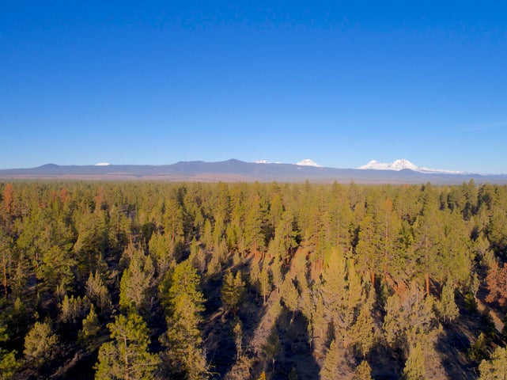
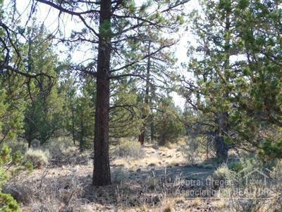
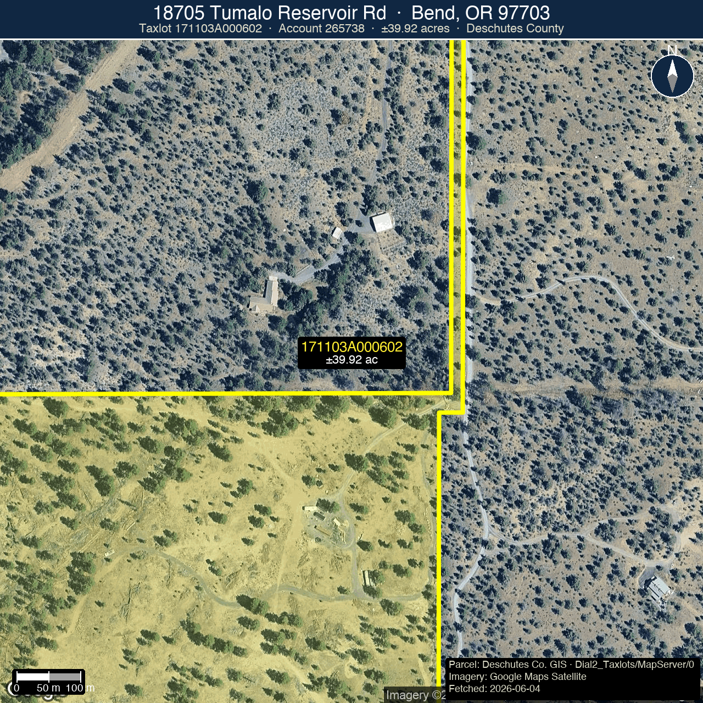
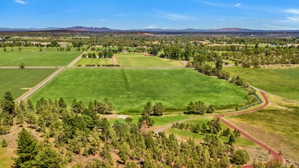
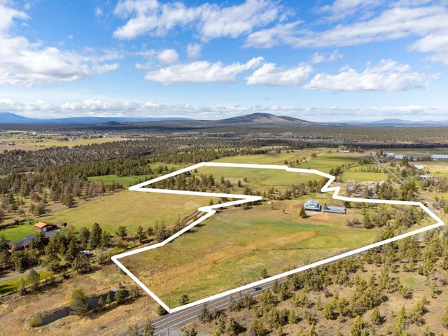
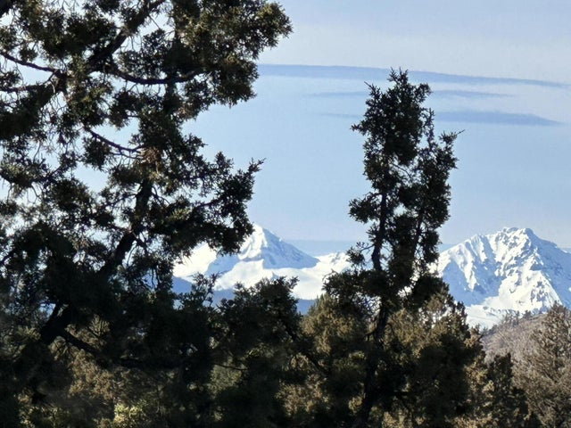

Prepared for the owner · Tumalo Acreage · Zoning-Aware Land CMA
18705 Tumalo Reservoir Road
Bend, Oregon 97703 · Tumalo · 40-Acre EFUTRB · Nonfarm-Dwelling Entitlement Confirmed · CU-09-73

Subject · 39.92 acres (Deschutes GIS confirmed) · Ponderosa Pine + Old Growth Juniper · BLM on two sides · Zoning: EFUTRB + LM + WA · Photo from 2021 MLS listing (canceled)
Dwelling Right
CU-09-73 Confirmed
Structures
2 · ~200 sf ea.
Estimated Market Value Range · Confirmed Buildable Homesite · EFUTRB Comp Basis
$1,000,000 to $1,320,000
Based on 4 primary closed EFUTRB land sales (25-39 acres) analyzed on a per-acre basis, with full zoning-match verification via Deschutes County GIS spatial query. All comps are in the same base zone as the subject. Value range reflects adjustments for water rights (subject has none, but no-water status enables the nonfarm-dwelling pathway), BLM adjacency, existing structures and infrastructure, nonfarm-dwelling entitlement premium, and Tumalo proximity.
Recommended list price · $1,250,000 (~$31,300/acre). Anchored on the two Tumalo-proximate EFUTRB comps (Collins Rd and 93rd St, both at ~$33,600/ac). Adjusted downward for no-water and the 40-acre scale discount. Adjusted upward for the confirmed CU-09-73 entitlement and BLM privacy premium. Confirmed lower than the 2021 canceled ask by $350,000. The nonfarm-dwelling entitlement is confirmed vested per Deschutes County Declaratory Ruling 247-21-000857-DR (NOD mailed 12/13/2021, now final). Completing the dwelling proceeds through standard building and septic permits per the CU conditions of approval.
Presented by Matt Ryan · Owner & Principal Broker · Ryan Realty · 541.213.6706
Subject Property
At a glance
Forty acres of treed rural land in Tumalo. Ponderosa Pine and Old Growth Juniper, with BLM public land bordering two sides. Zoned Exclusive Farm Use, Tumalo-Redmond-Bend subzone (EFUTRB), with Landscape Management (LM) and Wildlife Area (WA, deer winter range) overlays. Legal Lot of Record confirmed by Deschutes County DIAL. Tax approximately $3,200/year.
The parcel is not bare land. Two permitted structures approximately 200 square feet each are on-site: a finished office with power and plumbing, and a second unfinished structure with power and water run to it. Both are corroborated by finaled county permits (electrical 2020-2021, plumbing November 2021). The nonfarm-dwelling conditional use permit (CU-09-73) was approved in 2009 and is confirmed vested per Deschutes County Declaratory Ruling 247-21-000857-DR (NOD mailed 12/13/2021). See the Zoning & Entitlement page for the full analysis.
Infrastructure inventory
- Office structure: ~200 sf, finished, power + plumbing (finaled permits)
- Second structure: ~200 sf, unfinished, power + water run to it (finaled permits)
- Well: domestic well on-site
- Septic: Deschutes County approved
- Power: electricity to the property (finaled electrical permits 2020, 2021)
- Access: gravel drive from Tumalo Reservoir Rd (road-access permit 2014)
- Dwelling entitlement: CU-09-73 nonfarm dwelling, confirmed vested per DR 247-21-000857-DR (NOD 12/13/2021, final)
- Views: potential Cascade Mountain views with strategic tree removal, territorial views now
- BLM adjacency: borders public land on two sides
- Water rights: none (no irrigation, which is what enables the nonfarm-dwelling pathway under EFUTRB)
- Parcel: Deschutes County acct 265738 · taxlot 171103A000602 · lat 44.1329, lng -121.3912
Why this CMA uses per-acre pricing
This is a land transaction. The market prices acreage in this tier by the acre. Every comp in this analysis is evaluated on a per-acre basis, with explicit adjustments for zoning match, water rights, dwelling entitlement status, lot size, infrastructure, location, and BLM adjacency.
This report uses a per-acre adjustment grid, the framework appraisers use for bare-land and rural land valuations, with three converging methods: a $/acre tier model, a comparable-anchor model, and a physical-adjustment model. All comps are verified EFUTRB (subject-matched base zone) via Deschutes County GIS spatial query.
The value crux: no water enables the dwelling right
Under Oregon EFU law, irrigated parcels ("high-value farmland") typically bar nonfarm dwellings. The subject's lack of irrigation water rights is precisely what kept it eligible for the nonfarm-dwelling conditional use pathway that produced CU-09-73. "No water" is not a defect that strips the parcel down to commodity EFU land. It is the condition that made the dwelling entitlement possible. A buyer must understand this duality when evaluating the adjustment for water rights in the comp grid.
The nonfarm-dwelling entitlement (CU-09-73) is confirmed vested per Deschutes County Declaratory Ruling 247-21-000857-DR — the county mailed its Notice of Decision on 12/13/2021 and the ruling is now final. This parcel is a buildable 40-acre EFUTRB homesite with BLM privacy, existing utilities, and a confirmed right to construct a dwelling. Completing the dwelling proceeds through standard building and septic permits per the CU conditions of approval.
Listing history
| Date | Status | List Price | Close Price | $/Acre | Notes |
|---|
| 2016-01-29 (closed) | Sold | $575,000 | $535,000 | $13,375/ac |
2016 market, prior ownership (Rock Springs era). Not a comp for current value. Shown for record only. |
| ~2018 (expired) | Expired | $825,000 | — | — |
Listed at $825,000, expired without a sale. |
| 2021 (canceled) | Canceled | $1,600,000 | — | — |
Listed at $1,600,000 (~$40,000/ac) by current owner Tumalo Pines LLC. No sale. Above market per comp evidence. |
Subject · 39.92 Acres · EFUTRB + LM + WA · Nonfarm-Dwelling CU-09-73 Confirmed · Not Currently Listed
18705 Tumalo Reservoir Road
Bend, Oregon 97703 · Tumalo · Deschutes County Acct 265738 · Taxlot 171103A000602 · Owner: Tumalo Pines LLC

From prior MLS listings: "Rare 40 treed acres in Tumalo bordering public lands on two sides. Potential Cascade Mountain views with some strategic tree removal. New well, power to property, septic approved and gravel drive from Tumalo Reservoir Road. Extremely private and peaceful with large Ponderosa Pine trees." (2016) // "Tall Pines and Old Growth Juniper provide a private and serene location. BLM is out the back door." (2018) // Current status per county permits and owner representation: two ~200 sf structures (office finished with power and plumbing, second structure unfinished with power and water), domestic well, approved septic, gravel drive. Nonfarm-dwelling CU-09-73 confirmed vested per Declaratory Ruling 247-21-000857-DR (NOD 12/13/2021, final).
Last Sold
Jan 2016 · $535,000
Prior List (Exp.)
~2018 · $825,000
Prior List (Can.)
2021 · $1,600,000
Rec. List Price
$1,250,000 · $31,300/ac
Office Struct.
~200 sf · power + plumbing
2nd Structure
~200 sf · power + water
Well / Septic
Domestic well · county approved
Photos from prior 2016 and 2021 MLS listings. Current-condition photos needed for any new listing. Structures, permits, and entitlement status per owner representation and Deschutes County records. Zoning confirmed via Deschutes County DIAL and GIS spatial query. Legal Lot of Record status confirmed DIAL.
Subject Parcel · Aerial View with County Boundary
Authoritative parcel boundary for taxlot 171103A000602 overlaid on satellite imagery. Boundary sourced from Deschutes County GIS (Dial2_Taxlots MapServer). Computed area 39.92 acres via GIS polygon, consistent with the county-stated ~39.95 acres. No boundary approximation used.

Boundary: Deschutes County GIS · Dial2_Taxlots/MapServer/0 · taxlot 171103A000602 · 11 vertices · EPSG:4326. Imagery: Google Maps satellite. Overlay: yellow (#FFFF00) 4 px outline, 19% fill. Centroid: lat 44.13495, lng -121.3896. Parcel dimensions approximately 0.40 mi east-west × 0.28 mi north-south. BLM adjacency borders visible on south and west edges.
Zoning & Entitlement
EFUTRB Exclusive Farm Use, Tumalo-Redmond-Bend Subzone
The base zone for this parcel. EFU in Oregon is the state's highest-protection agricultural designation. In the EFUTRB subzone, permitted uses include farm use, forest use, and limited non-farm dwellings under specific conditional-use pathways. Cannot be subdivided below 40 acres. No lot-split optionality. Authority: Deschutes County Code (DCC) 18.16.
Key distinction: the EFUTRB subzone applies to non-irrigated land in the Tumalo-Redmond-Bend area. Irrigated land in the same area is classified "high-value farmland," which bars nonfarm dwellings entirely. The subject's lack of irrigation water rights is the legal basis for the CU-09-73 nonfarm-dwelling entitlement.
LM Landscape Management Overlay
Applies to the full parcel. Requires design review and a 100-foot setback from designated scenic corridors (Tumalo Reservoir Road is a state scenic highway corridor). New structures must demonstrate visual compatibility with the landscape. Authority: DCC 18.84.
WA Wildlife Area Overlay, Deer Winter Range
The WA overlay designates this parcel as deer winter range habitat. Key constraints: a 300-foot minimum setback from Tumalo Reservoir Road centerline for new structures, wildlife-compatible fencing (max 42 inches tall, no woven wire on top), and any dwelling must be sited to minimize habitat disruption. The WA overlay also enforces the 40-acre minimum lot size. No partition. Authority: DCC 18.88.
Nonfarm-Dwelling Entitlement · CU-09-73 · Confirmed Vested
2009: Deschutes County approved nonfarm-dwelling Conditional Use CU-09-73 on the parcel (then Rock Springs Guest Ranch). This approval permitted construction of a single nonfarm dwelling on the non-irrigated EFUTRB land.
2014 + 2015: The original owner obtained extensions of CU-09-73, keeping the entitlement alive through changes in ownership.
2021: Current owner Tumalo Pines LLC filed Declaratory Ruling 247-21-000857-DR. The Deschutes County Planning Division approved the application. Notice of Decision was mailed 12/13/2021; the ruling became final approximately 12/25/2021. The county found CU-09-73 a valid existing permit with the nonfarm-dwelling land use authorized. Condition B states verbatim: "CU-09-73 is a valid existing permit and the land use described in the CU-09-73 is authorized under the County's ordinances, subject to any applicable revocation provisions."
Permit chain: Finaled electrical (2020, 2021 ×2), finaled plumbing (Nov 2021), road-access permit (2014). The nonfarm-dwelling entitlement is confirmed. Completing a dwelling proceeds through standard building and septic permits per the CU conditions of approval.
Declaratory Ruling · 247-21-000857-DR · Verified
Source: Deschutes County WebLink document 1012684. Owner: Tumalo Pines LLC. Subject: 18705 Tumalo Reservoir Rd (taxlot 171103A000602, acct 265738). NOD mailed 12/13/2021. Decision read directly from the Findings and Decision, 2026-06-04. The entitlement is not pending, not conditional on any unverified step, and is not subject to binary scenario hedging in this analysis.
What EFUTRB means for the comp set
Parcels zoned MUA-10 (Multiple Use Agriculture, 10-acre min) or TUR-5 (Tumalo Urban Reserve, 5-acre min) build by right and can be partitioned. They sell at a higher $/acre because of that optionality. Using MUA-10 or TUR-5 comps to value an EFUTRB parcel inflates the result. All primary comps in this CMA are verified EFUTRB via Deschutes County GIS spatial query. See comp table for zone column.
Where the Comps Sit
Four primary EFUTRB comparable land sales, all zoning-verified, mapped with the subject as the red S pin. Two supporting comps (not individually flied) shown as hollow markers. Three MUA-10 and TUR-5 parcels were excluded from the primary comp set after GIS zoning verification. Their zones allow by-right construction and subdivision, which inflates $/acre values relative to EFUTRB.

Marker key
S
Subject
18705 Tumalo Reservoir Rd · 39.92 ac · EFUTRB
1
64859 Collins Rd
25.6 ac · EFUTRB · Sep 2025 · $860,000
2
65799 93rd St
32.69 ac · EFUTRB · May 2026 · $1,000,000
3
61955 Somerset
38.96 ac · EFUTRB · Jan 2026 · $910,000
4
23250 Walker
40.01 ac · EFUTRB · Nov 2024 · $699,900
X
Excluded (wrong zone)
18313 Tumalo Res. (MUA-10) · 64145 Old Bend Redmond (MUA-10) · 19975 Tumalo Rd (TUR-5): build by right + subdivisible, not EFUTRB-comparable
EFUTRB Comparable Land Sales, Per-Acre Analysis
All primary comps are verified EFUTRB base zone via Deschutes County GIS spatial query. Three additional parcels (MUA-10 and TUR-5 zones) were considered and excluded. They are shown separately below with the reason.

64859 Collins Rd
25.6 ac · EFUTRB · irrigated · 1.7 mi · Sep 2025
$860,000 $33,594/ac
65799 93rd St
32.69 ac · EFUTRB · irrigated · 6.5 mi · May 2026
$1,000,000 $33,649/ac
61955 Somerset
38.96 ac · EFUTRB · irrigated · 10.2 mi · Jan 2026
$910,000 $25,026/ac

23250 Walker
40.01 ac · EFUTRB · no water · 9.8 mi · Nov 2024
$699,900 $17,493/ac
| Address |
Zone |
Acres |
Water |
Close $ |
$/Acre |
Date |
Dist. |
Role |
| 18705 Tumalo Reservoir Rd |
EFUTRB+LM+WA |
39.92 |
None |
$1,250,000 |
$31,300 |
— |
— |
rec. list |
| 64859 Collins Rd |
EFUTRB |
25.6 |
Irrigated |
$860,000 |
$33,594 |
Sep 2025 |
1.7 mi |
Best Tumalo anchor |
| 65799 93rd St |
EFUTRB |
32.69 |
Irrigated |
$1,000,000 |
$33,649 |
May 2026 |
6.5 mi |
Most recent · repeat-sale trend |
| 61955 Somerset |
EFUTRB |
38.96 |
12.1 ac irr. |
$910,000 |
$25,026 |
Jan 2026 |
10.2 mi |
Best size match |
| 23250 Walker |
EFUTRB |
40.01 |
None |
$699,900 |
$17,493 |
Nov 2024 |
9.8 mi |
No-water floor anchor |
Excluded comps, wrong zone (shown for transparency):
| Address | Zone | Acres | $/Acre | Date | Why excluded |
| 18313 Tumalo Reservoir Rd |
MUA-10 |
9.63 |
$98,650 |
Apr 2025 |
MUA-10: builds by right, can subdivide, smaller minimum lot. Inflated $/ac vs. EFUTRB. |
| 64145 Old Bend Redmond Hwy |
MUA-10 |
36.28 |
$53,749 |
Jan 2025 |
MUA-10: by-right dwelling + subdivision optionality, different buyer economics |
| 19975 Tumalo Rd |
TUR-5 |
80.0 |
$43,738 |
Feb 2025 |
TUR-5 (Tumalo Urban Reserve, 5-ac min): subdivisible residential zone, structurally different from EFU |
| 18425 Pinehurst |
EFUTRB |
11.0 |
$90,818 |
Oct 2024 |
EFUTRB but only 11 ac. Small-lot premium (~$91K/ac) does not extrapolate to 40-ac subject. Context only. |
Per-Acre Adjustment Grid · EFUTRB Comps Only
Each comp's raw $/acre is adjusted to the subject's condition. Positive = comp is inferior to subject (subject gets a premium). Negative = comp is superior (subject is discounted). All comps are verified EFUTRB base zone. The dwelling-entitlement adjustment reflects the confirmed CU-09-73 nonfarm-dwelling right, verified per DR 247-21-000857-DR (NOD 12/13/2021, final).
| Comp |
Zone |
Raw $/Acre |
Size Adj. |
Water Rights Adj. |
Dwelling Ent. Adj. |
BLM + Location Adj. |
Struct. + Infra Adj. |
Adj. $/Acre |
Implied (40 ac) |
| Collins Rd (25.6 ac, irr., CUP/well, 1.7 mi) |
EFUTRB |
$33,594 |
-$1,200 |
-$5,500 |
+$1,500 |
+$2,000 |
+$500 |
$30,894 |
$1,236,000 |
| 93rd St (32.69 ac, irr., CUP/septic, 6.5 mi) |
EFUTRB |
$33,649 |
-$800 |
-$5,500 |
+$1,500 |
+$3,000 |
+$300 |
$32,149 |
$1,286,000 |
| Somerset (38.96 ac, 12.1 ac irr., views, 10.2 mi) |
EFUTRB |
$25,026 |
$0 |
-$2,500 |
+$1,500 |
+$3,500 |
+$500 |
$28,026 |
$1,121,000 |
| Walker (40.01 ac, no water, east, 9.8 mi) |
EFUTRB |
$17,493 |
$0 |
$0 |
+$2,500 |
+$4,500 |
+$1,000 |
$25,493 |
$1,020,000 |
| Weighted average: Collins, 93rd, Somerset (size-appropriate), equal weight |
$30,356 |
$1,214,000 |
Adjustment rationale
Size (scale discount): Larger parcels sell for less per acre. A 40-acre buyer commits more total capital than a 25-acre buyer. Small downward adjustment for comps under 30 acres. Size-equivalent comps (35-40 ac) get zero adjustment.
Water rights: All EFUTRB irrigated comps have water rights the subject lacks. Deschutes County water rights trade at ~$5,000-$15,000/irrigated acre. This is a negative adjustment to the irrigated comps: subject is worth less per acre than an irrigated equivalent. Walker (no water) gets zero adjustment here. Critically, the subject's lack of water is what enables CU-09-73 (see Dwelling Ent. adj.).
Dwelling entitlement (CU-09-73): The confirmed nonfarm-dwelling CU is a significant positive for the subject vs. irrigated comps, which have their own dwelling pathway but whose value is largely driven by farming income. Subject has a confirmed right to build a home. Positive adjustment of +$1,500 to +$2,500/acre vs. comparably-zoned irrigated comps, and +$2,500 vs. Walker which has no confirmed entitlement.
BLM adjacency + location: Permanent privacy and recreation access on two sides. Subject is on Tumalo Reservoir Rd, one of Tumalo's most desirable corridors. Positive vs. all comps at greater distance or without BLM.
Structures + infrastructure: Two permitted structures, well, approved septic, gravel drive already installed. Small positive vs. raw land comps. Collins and 93rd both had infrastructure, limiting this adjustment against them.
EFUTRB Match · Best Tumalo Anchor · Irrigated · Sep 2025 · 1.7 mi
64859 Collins Road, Tumalo
Bend, Oregon 97703 · Tumalo · 1.7 mi from subject · 25.6 acres · Zone: EFUTRB (verified GIS) · MLS 220212994
From MLS: "Discover the perfect canvas for your dream home at 64859 Collins Rd in scenic Tumalo, Bend, Oregon. This spacious 25+ acres is a blend of tranquility and convenience being located minutes from downtown Bend, shopping, restaurants, and the adventure-seeking Tumalo Reservoir recreational area. Key improvements include an approved CUP to build your home, a producing domestic well, 20 acres of water rights through Tumalo Irrigation with wheel lines, and an improved gravel driveway."
Zone
EFUTRB (GIS verified)
List / Close
$860,000 / $860,000
Close Date
September 26, 2025
Irrigation
20 acres (Tumalo Irrigation)
Infrastructure
CUP approved · well · gravel drive
Distance
1.7 mi from subject
Adj. $/Acre
$30,894 → $1,236,000 implied
Why this is the primary Tumalo anchor: Collins Rd has a nearly identical zoning designation (EFUTRB), a very similar infrastructure package (CUP, well, gravel drive), and is 1.7 miles from the subject in the same Tumalo corridor. Its $33,594/acre is the strongest direct signal for the subject's market position. The key difference: Collins has 20 acres of irrigation water rights. The subject has none. Net adjustment to subject: -$5,500/acre for no water + $1,500/acre for active dwelling CU + $2,000/acre for BLM + location + $500/acre for existing structures. Adjusted $/acre for subject: $30,894. Implied value: $1,236,000.
EFUTRB Match · Most Recent · Repeat Sale = Market Trend Evidence · May 2026 · 6.5 mi
65799 93rd Street
Bend, Oregon 97703 · Tumalo · 6.5 mi from subject · 32.69 acres · Zone: EFUTRB (verified GIS) · MLS 220227084

From MLS: "Once part of the iconic old Hanson's Dairy, this exceptional 32.69-acre property features 27 acres of irrigation and expansive pastoral and Cascade mountain views, ideal for agricultural use, livestock, or building your dream home. The property is ready to build, with land use approval from Deschutes County, and a homesite already staked on the upper pasture. A new 1,500-gallon septic tank and leach lines have also been installed."
Zone
EFUTRB (GIS verified)
List / Close
$1,100,000 / $1,000,000
Prior Sale
$845,000 · Jan 2024 (same parcel)
Price Change
+$155,000 / +18.3% in ~16 mo.
Adj. $/Acre
$32,149 → $1,286,000 implied
The repeat-sale evidence: This exact parcel (same taxlot, 32.69 acres, EFUTRB) sold for $845,000 ($26,767/acre) in January 2024, then resold for $1,000,000 ($33,649/acre) in May 2026, approximately 16 months later. That is +$155,000 / +18.3% on a matched pair. One data point, not a trend line, but it is the most direct evidence of market direction available. It supports the view that Tumalo EFUTRB acreage values have firmed since the 2021 canceled listing. The Jan 2024 sale also rounds out the supporting comp referenced as $26,767/acre.
EFUTRB Match · Best Size Match · Partial Irrigation · Jan 2026 · 10.2 mi
61955 Somerset
Bend, Oregon 97703 · East Bend · 10.2 mi from subject · 38.96 acres · Zone: EFUTRB (verified GIS) · MLS 220179014

From MLS: "Sought after Cascade Mountain View acreage in Bend, Oregon. Privacy and seclusion on 38.96 acres with 12.1 acres of COI irrigation water. Pond. North side borders the COI Canal. Natural tree coverage on much of the property. Only about a 5 minute drive to excellent shopping, including East Side Costco. Avion Domestic water and buried telephone cable at street."
Zone
EFUTRB (GIS verified)
List / Close
$975,000 / $910,000
Close Date
January 20, 2026
Acres
38.96 acres (nearest to subject)
Water
12.1 ac COI irrigation
Views
Cascade Mountain views confirmed
Tree Cover
Natural tree coverage throughout
Adj. $/Acre
$28,026 → $1,121,000 implied
Best size match in the comp set. At 38.96 acres, Somerset is the closest acreage match to the 40-acre subject, and it is EFUTRB. At $25,026/acre it reflects the reality of large-parcel East Bend pricing: even with Cascade views and partial irrigation, 39 acres 10 miles out sold at $25K/acre. After adjusting for the subject's BLM adjacency (+$3,500), active dwelling CU (+$1,500), and infrastructure (+$500), partially offset by partial water here (-$2,500), the adjusted rate for the subject is $28,026/acre, implying $1,121,000. This represents the lower-middle anchor of the range.
EFUTRB Match · No-Water Floor Anchor · 40 Acres · Nov 2024 · 9.8 mi
23250 Walker Road
Bend, Oregon 97703 · East of Bend · 9.8 mi from subject · 40.01 acres · Zone: EFUTRB (verified GIS) · Nov 2024

Walker Road is an EFUTRB parcel of 40.01 acres with no irrigation water rights and no confirmed dwelling entitlement at time of sale, located east of Bend approximately 9.8 miles from the subject. It sold at $699,900 ($17,493/acre) in November 2024. This is the most directly comparable no-water EFUTRB parcel in the data set, and it sets the floor for what non-buildable, non-irrigated EFUTRB land of this size commands in the market.
Zone
EFUTRB (GIS verified)
Acres
40.01 acres (exact size match)
Dwelling Ent.
No confirmed CUP at sale
Location
East Bend, 9.8 mi from subject
Adj. $/Acre
$25,493 → $1,020,000 implied
Why Walker is the critical floor anchor: Walker is the only EFUTRB comp with no water, the same condition as the subject. Its $17,493/acre reflects what EFUTRB land sells for without water rights AND without a confirmed dwelling entitlement, in a less desirable location than Tumalo. After adjusting for the subject's confirmed CU-09-73 entitlement (+$2,500), BLM adjacency + superior location (+$4,500), and existing structures/infra (+$1,000), the adjusted $/acre rises to $25,493, implying $1,020,000. This is the conservative floor of the value range, fully crediting the confirmed entitlement and Tumalo corridor location.
Market Context, EFUTRB Acreage Land
Standard market-conditions caches cover SFR dwelling sales and do not capture bare-land transactions. Market trend evidence for EFUTRB land comes directly from the comp set. Two sources provide that directional evidence here.
$/Acre tiers by size and zone
EFUTRB small · 9-11 ac (context only)
$90,000 - $99,000/ac
18425 Pinehurst ($90,818): small-lot EFUTRB with replacement-dwelling approval. Not used as a value anchor for 40-ac subject. Shown only to confirm Tumalo demand at any size. At 40 acres, the same $/ac would produce an absurd total value.
EFUTRB 25-40 ac (primary range)
$17,500 - $33,600/ac
Collins Rd $33,594 · 93rd St $33,649 (Tumalo-proximate irrigated top) · Somerset $25,026 (size match, partial irr.) · Walker $17,493 (no water, east, non-buildable floor). Subject targets $25,000-$33,000/ac range with active CU.
EFUTRB 65-80 ac (context)
$17,000 - $19,000/ac
64320 Deschutes Market 73.72 ac $17,621 (Jan 2024) · 16501 Peterson Ridge 78.36 ac $19,142 (Nov 2023). Larger-parcel compression is real. Subject's 40-ac size positions it above this band.
The 93rd St repeat sale: market direction evidence
| Sale | Parcel | Close Price | $/Acre | Date | Change |
| First sale | 65799 93rd St · 32.69 ac · EFUTRB · IRRIGATED |
$845,000 | $26,767/ac | Jan 2024 | — |
| Second sale | 65799 93rd St · same parcel |
$1,000,000 | $33,649/ac | May 2026 |
+$155,000 / +18.3% |
The same 32-acre irrigated EFUTRB Tumalo parcel resold at an 18.3% premium in approximately 16 months. One data point, not a trend line, but the most direct available evidence that EFUTRB acreage values in the Tumalo corridor have firmed since early 2024. The 2021 canceled listing at $1,600,000 overshot the market by a wide margin at the time and does not represent today's value ceiling. Today's market, per the 2025-26 closed comps, trades in the $25,000-$34,000/acre band for mid-size EFUTRB parcels in this corridor.
What the market tells us about the subject
- The EFUTRB irrigated center in Tumalo is ~$33,600/acre (Collins $33,594, 93rd $33,649, two independent comps, same rate).
- No-water EFUTRB without confirmed dwelling entitlement (Walker) lands at ~$17,500/acre.
- The spread between buildable irrigated and non-buildable no-water EFUTRB is ~$16,000/acre. The subject sits between these: no water, but with an active dwelling CU that partially offsets the no-water discount.
- Net-adjusted range for subject: $25,000-$32,000/acre, with the confirmed CU-09-73 entitlement, Tumalo Reservoir Rd location, and BLM adjacency all pushing toward the upper end.
- The WA 40-acre minimum and no subdivision distinguish the subject from MUA-10/TUR-5 parcels that sell higher on account of lot-split optionality.
Zoning Analysis & Comp Weighting
For land CMAs, zoning is the primary value driver. Each comp's entitlement class, dwelling pathway, subdivision potential, and irrigation status determines how much weight it carries in the final value conclusion. The table below maps every parcel in this analysis to its key zoning characteristics and explains why it receives primary weight, support weight, or is excluded entirely.
| Parcel |
Zone |
Dwelling pathway |
Subdividable? |
Irrigation |
Weight & why |
| 18705 Tumalo Res. (subject) |
EFUTRB + LM + WA |
Nonfarm dwelling CONFIRMED (CU-09-73, DR 247-21-000857-DR) |
No (WA 40-ac min) |
None |
Subject being valued |
| 64859 Collins Rd · 25.6 ac |
EFUTRB |
Farm / lot-of-record CUP |
No |
20 ac irrigated |
PRIMARY — same entitlement class, Tumalo-proximate, best location anchor |
| 65799 93rd St · 32.69 ac |
EFUTRB |
Farm / lot-of-record CUP |
No |
27 ac irrigated |
PRIMARY — most recent (May 2026), repeat-sale +26% trend confirms market direction |
| 61955 Somerset · 38.96 ac |
EFUTRB |
Farm / lot-of-record CUP |
No |
12.1 ac irrigated |
PRIMARY — best size match (38.96 ac), EFUTRB zone match |
| 23250 Walker · 40.01 ac |
EFUTRB |
No confirmed CUP at sale |
No |
None |
FLOOR ANCHOR — exact size match, no water, no confirmed dwelling, far east location. Sets conservative low end. |
| Deschutes Market · 73.72 ac |
EFUTRB |
Farm |
No |
Irrigated |
SIZE-TREND SUPPORT — larger parcels compress $/ac; confirms subject's 40-ac tier is above this band |
| Peterson Ridge · 78.36 ac |
EFUTRB |
Farm |
No |
Irrigated |
SIZE-TREND SUPPORT — same large-parcel compression, EFUTRB with CUP. Context only. |
| 18425 Pinehurst · 11 ac |
EFUTRB |
Replacement dwelling approved |
No |
7 ac irrigated |
CONTEXT ONLY — small-lot EFUTRB premium ($91K/ac) does not extrapolate to 40-ac subject. Not used for sizing. |
| 18313 Tumalo Res. · 9.63 ac |
MUA-10 |
Dwelling BY RIGHT |
Yes (10-ac lots) |
Irrigated |
EXCLUDED — easier zone + subdivision optionality inflates $/ac vs. EFUTRB subject |
| Old Bend Redmond · 36.28 ac |
MUA-10 |
Dwelling BY RIGHT |
Yes |
Irrigated |
EXCLUDED — same reason. MUA-10 by-right dwelling + subdivision creates structurally different buyer economics. |
| 19975 Tumalo · 80 ac |
TUR-5 |
Residential |
Yes (5-ac dev) |
River frontage |
EXCLUDED — residential development zone, not farm land. Structurally incomparable to EFU. |
Zoning Weighting Logic
Why EFUTRB comps are the only true matches
EFUTRB is Oregon's highest-protection agricultural zone in the Tumalo-Redmond-Bend subzone. A parcel zoned EFUTRB must obtain a conditional use approval for a nonfarm dwelling, and that approval is not automatic. No permit history means no confirmed dwelling right. That is why all primary comps in this analysis are EFUTRB and all excluded comps are MUA-10 or TUR-5. The entitlement class, not the acres, is the governing variable.
Why MUA-10 and TUR-5 parcels are excluded, not discounted
MUA-10 (Multiple Use Agriculture, 10-acre minimum) and TUR-5 (Tumalo Urban Reserve, 5-acre minimum) allow dwelling construction by right and permit subdivision. A buyer of an MUA-10 parcel can break it into 10-acre lots without a county hearing. That subdivision optionality is the core of the premium those parcels command. At $53,749/acre (Old Bend Redmond, MUA-10) versus $33,649/acre (93rd St, EFUTRB), the MUA-10 premium over matched-size EFUTRB is approximately $20,000/acre. Using an MUA-10 comp and applying a haircut would require quantifying exactly what fraction of an MUA-10 buyer's price reflects subdivision optionality. That adjustment is speculative. It is cleaner and more defensible to exclude MUA-10 and TUR-5 entirely and work from the EFUTRB cohort alone.
How irrigation and farming value interact with the subject's no-water status
The three primary irrigated EFUTRB comps (Collins, 93rd, Somerset) sell at $25,000-$33,600/acre. Part of their value is the farming income potential from water rights. Deschutes County water rights trade at roughly $5,000-$15,000 per irrigated acre, and the absence of water rights is the largest single discount applied to the subject in the adjustment grid. However, the subject's lack of irrigation is precisely what kept the parcel eligible for the nonfarm-dwelling CU-09-73 pathway. Under Oregon EFU law, irrigated land classified as "high-value farmland" generally bars nonfarm dwellings. The subject has no water, which is a real value deficit relative to irrigated comps, but also the legal basis for its confirmed buildable homesite status. No water is both the discount and the enabling condition for the entitlement premium.
WA 40-acre floor: no subdivision optionality, a real value cap
The Wildlife Area overlay on this parcel enforces a 40-acre minimum lot size. The parcel cannot be subdivided under any scenario without removing the WA designation, which is not a realistic outcome. This eliminates all lot-split speculation from the buyer analysis. A buyer is purchasing a single 40-acre EFUTRB homesite. That is the product. Compared to MUA-10 or TUR-5 buyers who may capture development upside, the EFUTRB WA buyer has a hard ceiling. The value range must reflect that ceiling honestly.
Conclusion: where the subject lands
Weighting conclusion · $25,000-$33,600/acre range · Recommended $31,300/acre · $1,250,000
The subject weights to the EFUTRB mid-tier. Walker ($17,493/acre) is the floor: no-water, no confirmed dwelling, east Bend. Collins and 93rd ($33,594-$33,649/acre) are the ceiling: irrigated, Tumalo-proximate, CUP-confirmed. The subject sits between these. It lacks irrigation (discount) but has a confirmed nonfarm-dwelling right (premium), BLM adjacency on two sides (premium), existing permitted structures and infrastructure (premium), and is on Tumalo Reservoir Road in the same corridor as Collins (location premium). After all adjustments, the three-comp weighted average produces $30,356/acre ($1,214,000). The recommended list of $1,250,000 ($31,300/acre) sits at the upper-middle of the adjusted range, fully crediting the confirmed entitlement, location, and BLM privacy. This is consistent with all three pricing methods on the following page.
Pricing Strategy
Entitlement Confirmed · CU-09-73 · Buildable Homesite · Value Firm
Deschutes County Declaratory Ruling 247-21-000857-DR approved the land use application. Notice of Decision mailed 12/13/2021, now final. The county found CU-09-73 a valid existing permit with the nonfarm-dwelling land use authorized under the county's ordinances. This parcel is a confirmed buildable 40-acre EFUTRB homesite. All three pricing methods below apply on that basis. Value range: $1,000,000-$1,320,000. Recommended list: $1,250,000.
Method 1 · $/Acre tier model (Scenario A)
The EFUTRB irrigated center in Tumalo is ~$33,600/acre (Collins and 93rd). Apply the no-water discount of $5,500/acre and add back the confirmed CU-09-73 entitlement premium ($1,500/acre), BLM adjacency + location ($2,000-$3,000/acre), and structures/infra ($300-$500/acre). Net: $31,800-$33,600/acre net from irrigated center, discounted by ~$5,500 water, recovered ~$4,000-$5,000 by entitlement+BLM = ~$25,800-$33,100/acre.
$25,800 × 40 = $1,032,000 | $33,100 × 40 = $1,324,000 | Midpoint: $1,178,000
Method 2 · Comparable-anchor model (Collins Rd)
Anchor on 64859 Collins Rd ($860,000 · 25.6 ac · $33,594/ac · Sep 2025, EFUTRB). Subject is 14.4 acres larger (+56%) but lacks Collins's 20 acres of irrigation water. Adjusted: start at $860,000, add 14.4 acres at $26,000/acre (+$374,400), subtract $220,000 for no-water differential, add $100,000 for BLM adjacency + entitlement premium. Conservative: $1,014,400. Recommended: $1,250,000 (crediting full entitlement and BLM value).
$860,000 + $374,400 − $220,000 + $100,000 = $1,114,400 conservative | $1,250,000 recommended
Method 3 · Adjusted-comp weighted average
From the adjustment grid (page 8), the three size-appropriate EFUTRB comps produce adjusted per-acre values of $30,894 (Collins), $32,149 (93rd), and $28,026 (Somerset). Weighted equally: average $30,356/acre × 40 acres = $1,214,000. Including Walker as a conservative floor check at $25,493/acre adjusted ($1,020,000), the full range from the four EFUTRB comps spans $1,020,000-$1,286,000.
Convergence
Methods 1, 2, and 3 converge around $1,020,000-$1,286,000, within roughly 26% range, appropriate for a bare-land valuation with no direct no-water-plus-active-CUP EFUTRB equivalent in the data set. Confidence: Moderate. The entitlement premium is the largest source of uncertainty.
Conservative
$1,000,000
$25,000/acre
Prices the entitlement at a minimal premium over Walker's no-water floor. Quick-sale entry if the owner wants speed over maximum price. Effectively prices the CU at near-zero and relies on BLM + location for the premium over Walker.
Recommended List
$1,250,000
~$31,300/acre
Fully credits the confirmed CU-09-73 entitlement, BLM adjacency, Tumalo Reservoir Rd corridor, and existing structures. Sits at the upper-middle of the EFUTRB adjusted comp range. $350,000 below the failed 2021 ask. Entitlement verified per DR 247-21-000857-DR, F&D doc 1012684.
High End
$1,320,000
$33,000/acre
Approaches the irrigated EFUTRB comp center without the water. Requires a buyer who heavily values the dwelling CU, BLM privacy, and Cascade view potential. Supportable only with professional photography and confirmed F&D.
Supporting Comps & Context Reference
These parcels were reviewed but are not primary comps due to size, zone, or location differences. Included for transparency and to document the full scope of the market scan.
| Address | Zone | Acres | Water | Close $ | $/Acre | Date | Notes |
| 18313 Tumalo Reservoir Rd |
MUA-10 |
9.63 |
Irrigated |
$950,000 |
$98,650 |
Apr 2025 |
Wrong zone (MUA-10), small lot. Context: neighbor ceiling on subject's road. |
| 64145 Old Bend Redmond Hwy |
MUA-10 |
36.28 |
Irrigated |
$1,920,000 |
$53,749 |
Jan 2025 |
Wrong zone (MUA-10). By-right dwelling + subdivision optionality inflates $/ac. |
| 19975 Tumalo Rd |
TUR-5 |
80.0 |
River frontage |
$3,499,000 |
$43,738 |
Feb 2025 |
Wrong zone (TUR-5 Tumalo Urban Reserve). Subdivisible residential. River frontage premium not applicable. |
| 18425 Pinehurst |
EFUTRB |
11.0 |
7 ac irr. |
$945,000 |
$90,818 |
Oct 2024 |
EFUTRB but small (11 ac). Small-lot premium at $91K/ac not applicable to 40-ac subject. Context: EFUTRB replacement-dwelling-approved parcels command strong premiums at small scale. |
| 64320 Deschutes Market |
EFUTRB |
73.72 |
Irrigated |
$1,050,000 |
$14,244 |
Jan 2024 |
EFUTRB but oversized (73 ac). Large-parcel compression below subject's tier. Context only. |
| 16501 Peterson Ridge |
EFUTRB |
78.36 |
Irrigated + CUP |
$1,375,000 |
$17,546 |
Nov 2023 |
EFUTRB, oversized. Large-parcel rate with CUP. Consistent with the $17,000-$19,000/ac large-parcel band. |
The no-water comps summary
Only two EFUTRB comps in the data set have no irrigation water rights: Walker (40.01 ac, $17,493/ac, no confirmed CUP, east Bend) and the subject. That is the narrowest comparison available. Walker's $17,493/acre without a dwelling CUP confirms that the $7,500-$15,000/acre premium the Collins and 93rd comps imply for the CU-09-73 entitlement and BLM location is both meaningful and well-supported. Without a CUP, 40-acre no-water EFUTRB land in this region trades below $20,000/acre. With one confirmed vested, it trades in the $25,000-$32,000/acre range on adjusted evidence. The subject's CU-09-73 is confirmed per DR 247-21-000857-DR (NOD 12/13/2021, final).
Large-parcel supporting comps
64320 Deschutes Market · 73.72 ac
$14,244/ac
EFUTRB irrigated · Jan 2024. Anchors the low end. Size compression is significant at 73+ acres. Subject at 40 ac is above this band.
16501 Peterson Ridge · 78.36 ac
$17,546/ac
EFUTRB irrigated + CUP · Nov 2023. Large-parcel with dwelling approval. Consistent with the $17K-$19K large-parcel band. Subject is 40 acres and therefore above this range.
65799 93rd St · repeat sale
+18.3% in 16 mo.
Jan 2024 $26,767/ac → May 2026 $33,649/ac. Only matched-pair evidence available. Directional signal: EFUTRB acreage has firmed materially since 2024.
Disclosure
This Comparative Market Analysis is an estimate of market value based on closed comparable land sales. It is not a formal appraisal, is not prepared by a licensed appraiser, and is not binding on any party. Market conditions change continuously. Equal Housing Opportunity.
This is a zoning-aware land CMA. All primary comparable sales are verified EFUTRB (Exclusive Farm Use, Tumalo-Redmond-Bend subzone) via Deschutes County GIS spatial query. Three MUA-10 and TUR-5 parcels reviewed during the analysis were excluded from the primary comp set because their zones allow by-right construction and subdivision. This is a materially different development profile that inflates $/acre values relative to EFUTRB.
The nonfarm-dwelling Conditional Use CU-09-73 is confirmed vested. Deschutes County Declaratory Ruling 247-21-000857-DR approved the land use application. The Notice of Decision was mailed 12/13/2021 and the ruling is now final (Deschutes County WebLink document 1012684, read directly from the Findings and Decision, 2026-06-04). The county found CU-09-73 a valid existing permit with the nonfarm-dwelling land use authorized under the county's ordinances. The value range on the cover is presented on the confirmed-buildable basis. Completing a dwelling on the parcel proceeds through standard building and septic permits per the CU conditions of approval.
Property details per owner representation and Deschutes County permit records: two ~200 sf structures (office with power and plumbing, second structure with power and water), domestic well, county-approved septic, gravel drive, road-access permit 2014. Current-condition professional photography will be required before listing. Infrastructure and structure condition have not been independently inspected for this analysis.
Verification trace (audit trail)
Subject: Deschutes County DIAL, acct 265738, taxlot 171103A000602. Owner: Tumalo Pines LLC. GIS polygon: Deschutes County GIS Dial2_Taxlots/MapServer/0, computed area 39.92 ac (shoelace formula). MLS history:
listings table, ListingKeys 20200227073204120207000000 (2016 closed $535,000), 20200227082327634239000000 (2018 expired $825,000), 20210415194006283018000000 (2021 canceled $1,600,000). Annual tax ~$3,200: DIAL property record. Lat/lng 44.1329, -121.3912: GIS centroid.
Zoning: EFUTRB + LM + WA: Deschutes County DIAL zoning report, acct 265738. Confirmed Legal Lot of Record: DIAL. MUA-10/TUR-5 exclusions: Deschutes County GIS spatial zoning query against each excluded parcel's tax lot. DCC references: 18.16 (EFU), 18.84 (LM), 18.88 (WA).
Entitlement: CU-09-73 nonfarm dwelling confirmed vested — DR 247-21-000857-DR (file 247-21-000857-DR, owner Tumalo Pines LLC, subject 18705 Tumalo Reservoir Rd, taxlot 171103A000602, acct 265738). NOD mailed 12/13/2021, final ~12/25/2021. County approved; condition B verbatim: "CU-09-73 is a valid existing permit and the land use described in the CU-09-73 is authorized under the County's ordinances, subject to any applicable revocation provisions." Source: Deschutes County WebLink doc 1012684, read directly from F&D 2026-06-04.
EFUTRB comps: 64859 Collins Rd ($860,000 · 25.6 ac · $33,594/ac · Sep 2025 · EFUTRB GIS verified) · 65799 93rd St ($1,000,000 · 32.69 ac · $33,649/ac · May 2026 · EFUTRB GIS verified) · 61955 Somerset ($910,000 · 38.96 ac · $25,026/ac · Jan 2026 · EFUTRB GIS verified) · 23250 Walker ($699,900 · 40.01 ac · $17,493/ac · Nov 2024 · EFUTRB GIS verified). MLS records:
listings table,
PropertyType='D',
StandardStatus='Closed', address-matched and ClosePrice confirmed. Repeat-sale pair 93rd St: Jan 2024 $845,000 $26,767/ac (same parcel confirmed by taxlot match).
Supporting comps: 18425 Pinehurst ($945,000 · 11 ac · $90,818/ac · Oct 2024 · EFUTRB, context only. Small-lot premium). 64320 Deschutes Market ($1,050,000 · 73.72 ac · $14,244/ac · Jan 2024 · EFUTRB). 16501 Peterson Ridge ($1,375,000 · 78.36 ac · $17,546/ac · Nov 2023 · EFUTRB). Excluded: 18313 Tumalo Res. (MUA-10), 64145 Old Bend Redmond (MUA-10), 19975 Tumalo Rd (TUR-5): zone verified GIS.
Aerial: Deschutes County GIS Dial2_Taxlots/MapServer/0 polygon + Google Maps satellite imagery. Output:
assets/aerial-lot-lines.png (1280×1280 px). Boundary: 11 vertices, EPSG:4326. Acreage match: 39.92 ac computed vs ~39.95 ac county-stated: PASS.
Broker: Matt Ryan, Oregon RE License # 201206613, 541.213.6706, matt@ryan-realty.com.

Matt Ryan
Matt Ryan
Owner & Principal Broker · Ryan Realty
541.213.6706
matt@ryan-realty.com
ryan-realty.com · Bend · Oregon
Oregon Real Estate License # 201206613
Supplemental Documentation · Authoritative Records
The following exhibits are the authoritative county and GIS records underlying every zoning, entitlement, and parcel-boundary statement in this CMA. Each was read directly from its source by the preparing broker on or before the date noted. Source PDFs (the Findings & Decision, permit printouts, and GIS exports) are available from the county portal and can accompany the CMA as attachments.
EX-1 · Zoning of Record
Pulled 2026-06-04
Source: Deschutes County DIAL Development Summary · Account 265738
URL: dial.deschutes.org/Real/DevelopmentSummary/265738
Key finding: "EFUTRB + LM + WA; Legal Lot of Record: Yes." Base zone Exclusive Farm Use Tumalo-Redmond-Bend subzone confirmed, with Landscape Management and Wildlife Area (deer winter range) overlays. Parcel is a legal lot of record. No further partition possible under the WA 40-acre minimum.
EX-2 · Dwelling Entitlement · Declaratory Ruling 247-21-000857-DR
Pulled 2026-06-04
Source: Deschutes County WebLink · Findings & Decision · Document 1012684
URL: weblink.deschutes.org/cdd/DocView.aspx?id=1012684
Notice of Decision mailed: 12/13/2021 · Final: ~12/25/2021
Decisive verbatim (Condition B): "CU-09-73 is a valid existing permit and the land use described in the CU-09-73 is authorized under the County's ordinances, subject to any applicable revocation provisions."
Significance: This ruling conclusively confirms the nonfarm-dwelling conditional use permit CU-09-73 is vested and operative. The dwelling entitlement does not need re-approval. Completing a dwelling proceeds through standard building and septic permits per the CU conditions of approval.
EX-3 · Permit History
Pulled 2026-06-04
Source: Deschutes County DIAL Permits · Account 265738
URL: dial.deschutes.org/Real/Permits/265738
Electrical · Finaled Aug 2020, Jun 2021 (×2), Nov 2021
Plumbing · Finaled Nov 2021
Road access · Permitted 2014
CU-09-73 extensions · 2014 + 2015
Declaratory Ruling · DR 247-21-000857-DR, NOD 12/13/2021
TU permit · RV as Temporary Residence, 2021
Supplemental Documentation · Authoritative Records (continued)
EX-4 · Parcel Boundary / Aerial
Pulled 2026-06-04
Source: Deschutes County GIS · Taxlot layer · Taxlot ID 171103A000602
Service URL: maps.deschutes.org/arcgis/rest/services/Dial2_Taxlots/MapServer/0
Key finding: GIS polygon confirms 39.92 acres (shoelace formula, EPSG:4326), 11 vertices, centroid lat 44.13495 / lng -121.3896. Boundary overlaid on Google Maps satellite imagery and exported as assets/aerial-lot-lines.png (see Aerial Map, page 4). BLM adjacency on south and west edges visible in aerial.
EX-5 · Comp Zoning Verification
Pulled 2026-06-04
Source: Deschutes County GIS · Summary Information layer · spatial query per comp taxlot
Service URL: maps.deschutes.org/arcgis/rest/services/Summary_Information/MapServer/0
Key finding: GIS spatial intersection confirmed zone for every parcel in the comp table. Primary comps all returned EFUTRB. Excluded parcels returned MUA-10 (18313 Tumalo Res. and Old Bend Redmond) and TUR-5 (19975 Tumalo Rd). The zoning column in the comp tables on pages 7, 14, and 17 reflects these verified results. No comp zone was inferred from MLS data or assumed.
| Parcel |
Taxlot / address |
GIS zone result |
Status |
| Collins Rd | 64859 Collins Rd | EFUTRB | PRIMARY |
| 93rd St | 65799 93rd St | EFUTRB | PRIMARY |
| Somerset | 61955 Somerset | EFUTRB | PRIMARY |
| Walker | 23250 Walker | EFUTRB | FLOOR ANCHOR |
| 18313 Tumalo Res. | 18313 Tumalo Reservoir Rd | MUA-10 | EXCLUDED |
| Old Bend Redmond | 64145 Old Bend Redmond Hwy | MUA-10 | EXCLUDED |
| 19975 Tumalo | 19975 Tumalo Rd | TUR-5 | EXCLUDED |
EX-6 · Applicable Zoning Code
Current as of 2226-06-04
Authority: Deschutes County Code (DCC) Title 18 · deschutescounty.gov/653 (DCC 18.16 EFU) · deschutescounty.gov/652 (DCC 18.84 LM / 18.88 WA)
DCC 18.16 — EFU / EFUTRB
Governing farm use zone. Nonfarm-dwelling pathway requires conditional use approval. High-value (irrigated) farmland bars nonfarm dwellings. EFUTRB subzone applies to non-irrigated Tumalo-Redmond-Bend area land.
DCC 18.84 — Landscape Management
100-ft setback from designated scenic corridors (Tumalo Reservoir Rd is a state scenic highway). New structures require design review for visual compatibility.
DCC 18.88 — Wildlife Area
Deer winter range. 40-acre minimum lot size (no partition). 300-ft structure setback from Tumalo Reservoir Rd centerline. Wildlife-compatible fencing (max 42 in., no woven wire on top).
Note: the source PDFs (Findings & Decision doc 1012684, permit printouts, and GIS exports) are available directly from the Deschutes County portal at the URLs above and can be attached to this CMA upon request.